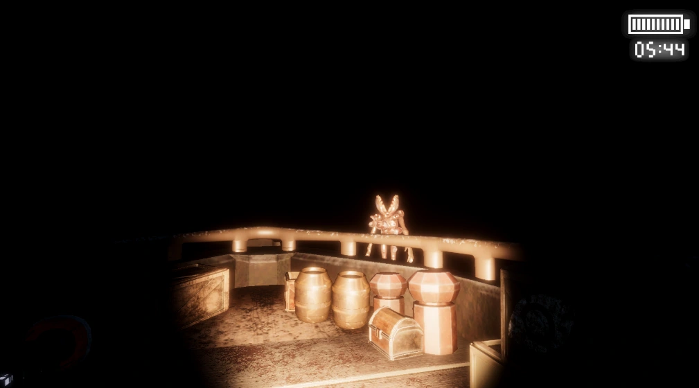
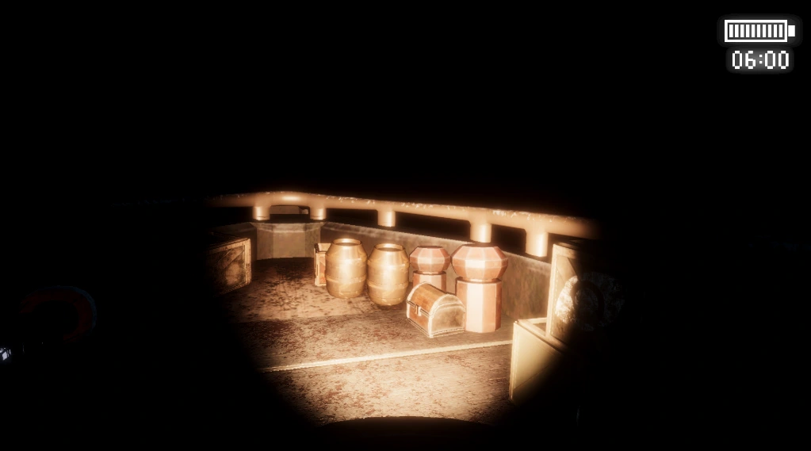
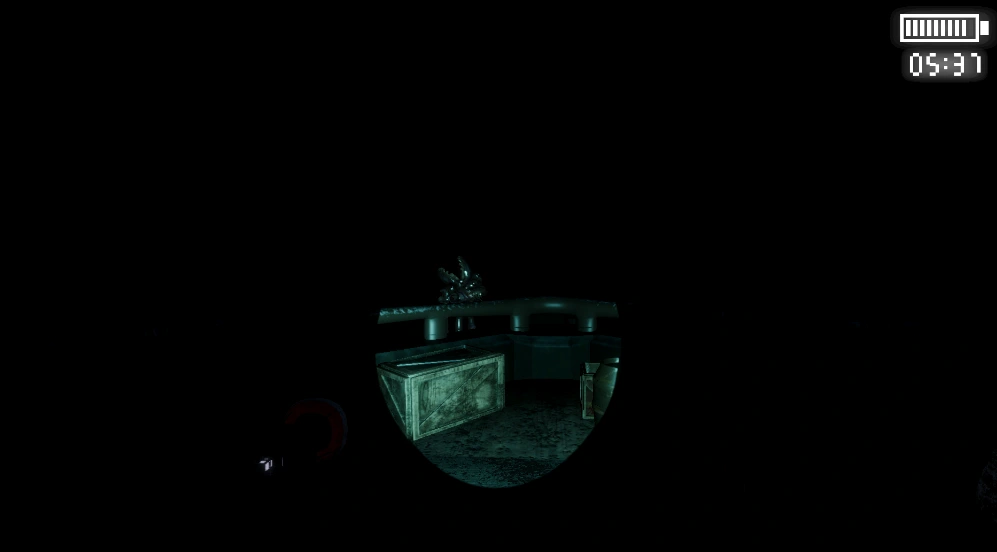
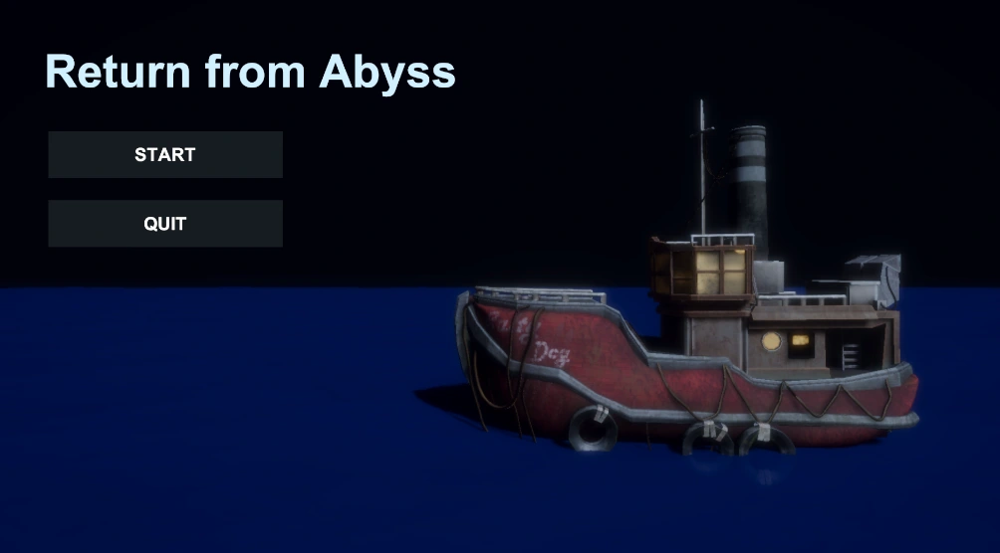

电量与照射模式
探照灯包含普通与聚光模式，消耗不同的电量。玩家需要在持续观察、集中应对和节约资源之间切换。
在漂流船上，用有限电量的探照灯识别威胁，守住最后六分钟。

玩家独自守在漂浮于深海上的破旧船只中，无法离开岗位，依靠有限电量的探照灯观察甲板、判断怪物行为，生存到六分钟倒计时结束。
光既是获取信息的手段，也是应对威胁的工具。不同怪物对光有不同反应：有的会被驱离，有的会因持续照射变得更危险。
探照灯包含普通与聚光模式，消耗不同的电量。玩家需要在持续观察、集中应对和节约资源之间切换。
影魔具有船沿悬挂、登船与追击等阶段，可通过照射驱离；伊甸受到持续照射后会进入登船阶段，要求玩家调整开关灯策略。


固定岗位限制了玩家的逃避空间，使决策集中在观察方向、识别目标、照射时机与剩余电量上。
这是一个合作项目。我负责策划、程序编写与 Unity 游戏制作，并使用 AI 辅助开发，推进脚本修改、功能接入和实现问题的处理。
项目围绕探照灯开关与模式、电量消耗、怪物受光反应、六分钟计时和开场流程组织运行逻辑。
结合具体功能需求与运行问题，使用 Codex 辅助修改脚本、接入资源并检查引用，让修改落到实际项目中。
例如开场教程音频的接入过程中，排查了文件扩展名与实际编码不一致导致的 Unity 导入问题，转换为可用音频格式并保留资源引用，完成教程语音替换。

项目已在 itch.io 发布原型，提供 Windows 下载。公开页面署名 TATKSYY 与 CarrotFoxy1，并标注 AI 辅助编程。
前往 itch.io 下载 ↗